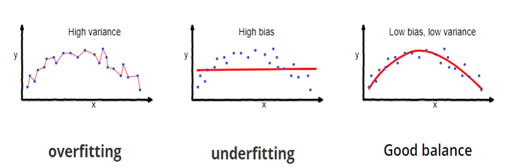
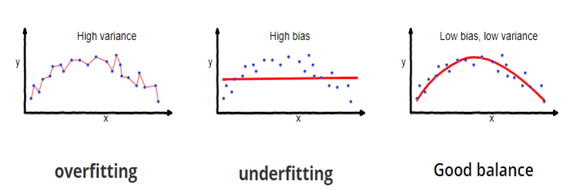

Applied Survival Analysis
Chapter 15 - Machine Learning in Survival Analysis
Lu Mao
Department of Biostatistics & Medical Informatics
University of Wisconsin-Madison
Outline
Regularized Cox regression models
Nonparametric regression by survival trees
Building prediction models for German Breast Cancer study
\[\newcommand{\d}{{\rm d}}\] \[\newcommand{\T}{{\rm T}}\] \[\newcommand{\dd}{{\rm d}}\] \[\newcommand{\cc}{{\rm c}}\] \[\newcommand{\pr}{{\rm pr}}\] \[\newcommand{\var}{{\rm var}}\] \[\newcommand{\se}{{\rm se}}\] \[\newcommand{\indep}{\perp \!\!\! \perp}\] \[\newcommand{\Pn}{n^{-1}\sum_{i=1}^n}\] \[ \newcommand\mymathop[1]{\mathop{\operatorname{#1}}} \] \[ \newcommand{\Ut}{{n \choose 2}^{-1}\sum_{i<j}\sum} \]
Regularized Cox Regression
Rationale
- With many covariates
- Prediction accuracy: under- vs over-fitting 
- Too many predictors \(\to\) overfitting
- Interpretation: easier with fewer predictors
- Prediction accuracy: under- vs over-fitting 
Linear Model Basics
- Set-up \[
Y=\alpha+\beta^\T Z+\epsilon
\]
- \(Z\): a \(p\)-vector of covariates (predictors)
- \(E(\epsilon\mid Z)=0\)
- Assume WLOG \(\sum_{i=1}^n Y_i=0\) and \(\sum_{i=1}^n Z_i=0\)
- Ordinary least-squares (OLS) estimator \[\begin{align*}
\hat\beta_{\rm OLS}=\arg\min_\beta R_n(\beta)=\left(\sum_{i=1}^n Z_i^{\otimes 2}\right)^{-1}\sum_{i=1}^nZ_iY_i
\end{align*}\]
- \(R_n(\beta)=\sum_{i=1}^n(Y_i-\beta^\T Z_i)^2\): residual sum of squares (RSS)
Subset Selection
- Big \(p\) problem
- Large variance (overfit) \(\to\) poor prediction
- \(p>n\): no fit
- Best-subset selection
- For each \(l\in\{0, 1,\ldots, p\}\), choose best model with \(l\) covariates with least RSS
- \((p+1)\) best models with decreasing RSS (as \(l=0,1,\ldots, p\))
- Choose \(l\) by cross-validation
- Partition sample into \(k\) pieces
- Set one piece aside to evaluate RSS of model fit on remaining data
- Cycle through all \(k\) pieces and average validation errors
Cross-Validation
- Computing validation error
Subset Selection: Limitations
- Best subset
- Fit all \(2^p\) submodels
- Forward/backward stepwise selections
- Start with null/full model, add/drop most/least significant predictor
- Where to stop \(\to\) cross-validation
- Disadvantages
- Computationally costly
- A discrete process: covariates are either retained or dropped; may be sub-optimal for prediction
Penalized Regression (I)
- Constrained least-squares
- Restricting \(L_q\)-norm of \(\beta\) reduces effective d.f. \[\begin{equation}\label{eq:vs:constrained} \tilde\beta(c)=\arg\min_\beta R_n(\beta), \mbox{ subject to }\sum_{j=1}^p|\beta_j|^q\leq c, \end{equation}\]
- Equivalent form by Lagrange multiplier
- \(L_q\)-penalized regression \[\begin{equation}\label{eq:vs:penal}
\hat\beta(\lambda)=\arg\min_\beta \left\{R_n(\beta)+\lambda\sum_{j=1}^p|\beta_j|^q\right\}
\end{equation}\]
- \(\lambda\geq 0\): tuning parameter controlling degree of regulation, determined by cross-validation
- \(\hat\beta(0)=\hat\beta_{\rm OLS}\); \(\hat\beta(\infty)=0\)
- \(L_q\)-penalized regression \[\begin{equation}\label{eq:vs:penal}
\hat\beta(\lambda)=\arg\min_\beta \left\{R_n(\beta)+\lambda\sum_{j=1}^p|\beta_j|^q\right\}
\end{equation}\]
Penalized Regression (II)
- Examples
- Ridge regression \((q=2)\)
- Closed-form solution (not sparse; every \(\beta_j\neq 0\)) \[\begin{equation}\label{eq:vs:ridge} \hat\beta(\lambda)=\left(\sum_{i=1}^n Z_i^{\otimes 2}+\lambda I_p\right)^{-1}\sum_{i=1}^nZ_iY_i \end{equation}\]
- Lasso \((q=1)\)
- For “least absolute shrinkage and selection operator”
- Sets some \(\hat\beta_j\equiv 0\); sparse solution
- Elastic net
- Combines the strengths of ridge regression and lasso \[\begin{equation}\label{eq:vs:en} \hat\beta(\lambda)=\arg\min_\beta \left[R_n(\beta)+\lambda\sum_{j=1}^p\left\{\alpha|\beta_j|+2^{-1}(1-\alpha)\beta_j^2\right\}\right] \end{equation}\]
- Handles correlated covariates better than lasso
- Ridge regression \((q=2)\)
\(L_1\)-Regularized Cox Model
- What’s with Cox model
- Objective function (RSS not computable due to censoring)
- Computational algorithm
- Definition of error for cross-validation
- Objective function: negative log-partial likelihood
- Regularize by \(L_1\) penalty \[\begin{equation}\label{eq:vs:cox_lasso} Q_n(\beta;\lambda)=-n^{-1}pl_n(\beta)+\lambda\sum_{j=1}^p|\beta_j| \end{equation}\]
- \(L_1\)-penalized partial-likelihood estimator \[\begin{equation}\label{eq:vs:optimize} \hat\beta(\lambda)=\arg\min_\beta Q_n(\beta;\lambda) \end{equation}\]
Pathwise Solution
- \(\hat\beta(\lambda)\) as a path of \(\lambda\)
- Iterative \(pl_n(\beta)\approx\) weighted sum of squares
- Coordinate descent at each iteration for \(L_1\)-penalized weighted least-squares
- Details in Section 15.1.3 of lecture notes
- \(K\)-fold cross-validation to select \(\lambda_{\rm opt}\)
- Some \(\hat\beta_j(\lambda_{\rm opt})=0\)
- Selected variables \(\{Z_{\cdot j}: \hat\beta_j(\lambda_{\rm opt})\neq 0, j=1,\ldots, p\}\)
Cross-Validation Error
- What is measure of error?
- RSS not applicable due to censoring
- Negative partial-likelihood?
- Unstable with small validation set (risk set too small)
- Partial-likelihood deviance
- On \(j\)th validation set \[
\mbox{CV}_j(\lambda)=pl_{n,-j}\{\hat\beta(\lambda)\}-pl_{n}\{\hat\beta(\lambda)\}
\]
- \(pl_{n,-j}(\beta)\): log-partial likelihood based on training set
- \(\mbox{CV}(\lambda)=k^{-1}\sum_{j=1}^k\mbox{CV}_j(\lambda)\)
- On \(j\)th validation set \[
\mbox{CV}_j(\lambda)=pl_{n,-j}\{\hat\beta(\lambda)\}-pl_{n}\{\hat\beta(\lambda)\}
\]
Prediction Error: Brier Score
- Brier score
- Mean squared error for predicted vs observed in test set
- Commonly used for binary outcomes
- Extension to time-to-event endpoint
- IPCW \[\begin{align}\label{eq:ml:BS}
\hat{BS}(t)&=n^{-1}\sum_{i=1}^n\Bigg[I(X_i\leq t, \delta_i=1)\hat G(X_i)^{-1}\hat S_i(t)^2\notag\\
&\hspace{20mm} + I(X_i>t)\hat G(t)^{-1}\{1-\hat S_i(t)\}^2 \Bigg]
\end{align}\]
- \(\hat S_i(t)\): predicted survival function for \(i\)th subject
- \(\hat G(t)\): KM estimator for the censoring distribution in test set
- IPCW \[\begin{align}\label{eq:ml:BS}
\hat{BS}(t)&=n^{-1}\sum_{i=1}^n\Bigg[I(X_i\leq t, \delta_i=1)\hat G(X_i)^{-1}\hat S_i(t)^2\notag\\
&\hspace{20mm} + I(X_i>t)\hat G(t)^{-1}\{1-\hat S_i(t)\}^2 \Bigg]
\end{align}\]
Software: glmnet::glmnet() (I)
- Basic syntax for regularized Cox model
- Elastic net \[ \hat\beta(\lambda)=\arg\min_\beta \left[-n^{-1}pl_n(\beta)+\lambda\sum_{j=1}^p\left\{\alpha|\beta_j|+2^{-1}(1-\alpha)\beta_j^2\right\}\right] \]
Z: covariate matrix;alpha: \(\alpha\)
Software: glmnet::glmnet() (II)
- Find optimal \(\lambda\)
GBC: An Example
- German Breast Cancer (GBC) study
- Cohort: 686 breast cancer patients
- Outcome: relapse-free survival
- Predictors: age (\(\leq\) 40 vs >40), menopausal status, hormone treatment, tumor grade, tumor size, lymph nodes, estrogen and progesterone receptor levels
- Training set (\(n=400\)) + test set (\(n=286\))
- Cohort: 686 breast cancer patients
Graphics
Selected Predictors
CV results
- \(\log(\lambda_{\rm opt}) = -3.89\)
# the optimal lambda obj.cv$lambda.min log(obj.cv$lambda.min) #> [1] -3.886169 # the beta at optimal lambda beta <- coef(obj.cv, s = "lambda.min") # the non-zero coefficients beta.selected <- beta[abs(beta[,1])>0,] # print out the non-zero coefficients beta.selected #> hormone age40 size grade nodes #> -0.371809445 0.455421368 0.003448500 0.201404194 0.040170638 #> prog #> -0.002908887
Survival Trees
Decision Trees
- Limitations of regularized Cox model
- Proportionality
- Linearity of covariate effects
- Interactions
- Tree-based classification and regression
- Classification and Regression Trees (CART; Breiman et al., 1984)
- Root node (all sample) \(\stackrel{\rm covariates}{\rightarrow}\) split into (more homogeneous) daughter nodes \(\stackrel{\rm covariates}{\rightarrow}\) split recursively
Basic Procedures
- Growing the tree
- Starting with root node, search partition criteria \[Z_{\cdot j}\leq z \,\,\,(j=1,\ldots, p; z \in\mathbb R)\] for one that minimizes “impurity” within daughter nodes \[\begin{equation}\label{eq:tree:nodes} A=\{i=1,\ldots, n: Z_{ij}\leq z\} \mbox{ and } B=\{i=1,\ldots, n: Z_{ij}> z\} \end{equation}\]
- Recursive splitting until terminal nodes sufficiently “pure” in outcome
- Tree-based prediction
- A new covariate vector \(\to\) terminal node it belongs \(\to\) predicted outcome
- Majority class
- empirical mean
- Kaplan-Meier estimator
- A new covariate vector \(\to\) terminal node it belongs \(\to\) predicted outcome
Splitting Criterion
- Objective function
- Choose partition \(A|B\) to minimize \[
R(A\mid\mid B)=\hat P(A)\hat{\mathcal G}(A)+\hat P(B)\hat{\mathcal G}(B)
\]
- \(\hat P(A)\), \(\hat P(B)\): proportions of observations in daughter nodes
- \(\hat{\mathcal G}(A)\), \(\hat{\mathcal G}(B)\): impurity measures within daughter nodes
- Choose partition \(A|B\) to minimize \[
R(A\mid\mid B)=\hat P(A)\hat{\mathcal G}(A)+\hat P(B)\hat{\mathcal G}(B)
\]
- Impurity measure
- Categorical \(Y \in\{1,\ldots, K\}\): Gini index \(\pr(Y_i\neq Y_j) = 1-\sum_{k=1}^K \pi_k^2\)
- Continuous: mean squared error
- Survival: mean squared deviance residuals (Cox model with binary node) \[\begin{equation}\label{eq:tree:deviance} R(A\mid\mid B)=n^{-1}\sum_{i \in A}d_{i}^2 +n^{-1}\sum_{i \in B}d_{i}^2 \end{equation}\]
Pruning the Tree
- Penalize complexity
- Cut overgrown branches \(\to\) prevent overfitting \(\to\) generalizability
- Minimize \[\begin{equation}\label{eq:tree:risk}
R(\mathcal T;\lambda)=R(\mathcal T)+\lambda|\mathcal T|
\end{equation}\]
- \(R(\mathcal T)\): mean squared (deviance) residuals for terminal nodes of tree \(\mathcal T\)
- \(|\mathcal T|\): number of terminal nodes
- \(\lambda\geq 0\): complexity parameter determined by cross-validation
- Cut overgrown branches \(\to\) prevent overfitting \(\to\) generalizability
- Final tree
- \(\mathcal T^{\rm opt} = \arg\min_{\mathcal T}R(\mathcal T;\lambda_{\rm opt})\)
- \(\mathcal T^{\rm opt}(z)\): terminal node for new covariate vector \(z\)
- \(\hat S(t\mid z)\): KM estimates in node \(\mathcal T^{\rm opt}(z)\)
Bagging and Random Forests
- Bagging
- A single tree \(\to\) large variance
- Take \(B\) bootstrapped samples from training data
- \(\mathcal T_b\): survival tree grown on \(b\)th bootstrap sample \((b=1, \ldots, B)\) (without pruning)
- \(\hat S_b(t\mid z)\): predicted survival function
- Final prediction \[ \hat S(t\mid z)=B^{-1}\sum_{b=1}^B \hat S_b(t\mid z) \]
- Random forests
- Same except only a random subset of covariates are considered at each split
- De-correlate the trees grown on different bootstrapped samples)
Software: rpart::rpart()
- Basic syntax for growing survival tree
xval = k: \(k\)-fold cross-validation;minbucket: minimum size of terminal node;cp: minimum reduction of impurity measure for a split
# grow the tree, with cross-validation
obj <- rpart(Surv(time, status) ~ covariates,
control = rpart.control(xval = 10, minbucket = 2, cp = 0))
# cross-validation results
cptable <- obj$cptable
# complexity parameter (lambda)
CP <- cptable[, 1]
# find optimal parameter
# cptable[, 4]: error function
cp.opt <- CP[which.min(cptable[, 4])] Software: rpart::prune()
- Basic syntax for pruning survival tree
tree:rpartobject for grown tree;cp: optimal \(\lambda\)test: test data frame
# prune the tree, with optimal lambda
fit <- prune(tree = obj, cp = cp.opt)
# plot the pruned tree structure
rpart.plot(fit)
# fit$where: vector of terminal node for training data
# compute KM estimates by terminal node
km <- survfit(Surv(time, status) ~ fit$where)
## prediction on test data ---------------------------
# terminal node for test data
treeClust::rpart.predict.leaves(fit, test) GBC: Survival Trees
- Same training data
- \(\lambda_{\rm opt}=0.017\); 3 splits (4 terminal nodes)
# Conduct 10-fold cross-validation (xval = 10)
obj <- rpart(Surv(time, status) ~ hormone + meno + size + grade + nodes +
prog + estrg + age,
control = rpart.control(xval = 10, minbucket = 2, cp = 0),
data = train)
printcp(obj) # xerror: objective
# CP nsplit rel.error xerror xstd
# 1 0.07556835 0 1.00000 1.00411 0.046231
# 2 0.03720019 1 0.92443 0.96817 0.047281
# 3 0.02661914 2 0.88723 0.95124 0.046567
# 4 0.01716925 3 0.86061 0.92745 0.046606 # minimizer
# 5 0.01398306 4 0.84344 0.92976 0.047514
# 6 0.01394869 5 0.82946 0.93941 0.048404
# 7 0.01055028 9 0.77120 0.97722 0.052133GBC: Final Tree
- Pruned tree

GBC: Brier Scores
- Brier scores of three models on test data

Conclusion
Notes (I)
- The lasso
- First proposed by Tibshirani (1996) for least-squares
- Extended to Cox model by Tibshirani (1997)
- Algorithms for \(L_1\)-regularized Cox model described in Simon et al. (2011)
- Variations
- group lasso (Yuan and Lin, 2006)
- adaptive lasso (Zou, 2006)
- smoothly clipped absolute deviations (SCAD; Xie and Huang, 2009)
Notes (II)
- More on decision trees
- Text: Breiman et al. (1984)
- Review article: Bou-Hamad et al. (2011, Statistics Surveys)
- Bagging and random forests (R-packages)
ipredrandomSurvivalForestranger

Notes (III)
- Tidymodels
censored: a member oftidymodelsfamily- https://www.tidyverse.org/blog/2021/11/survival-analysis-parsnip-adjacent
Summary
- Regularized Cox model
- Objective function \[
Q_n(\beta;\lambda)=-n^{-1}pl_n(\beta)+\lambda\sum_{j=1}^p|\beta_j|
\]
glmnet::glmnet(Z, Surv(time, status), family = “cox”, alpha = 1)
- Objective function \[
Q_n(\beta;\lambda)=-n^{-1}pl_n(\beta)+\lambda\sum_{j=1}^p|\beta_j|
\]
- Survival trees
- Root node \(\to\) recursive partitioning based on similarity in outcome \(\to\) pruning to prevent overfitting
rpart:: rpart(Surv(time, status) ~ covariates)
- Root node \(\to\) recursive partitioning based on similarity in outcome \(\to\) pruning to prevent overfitting